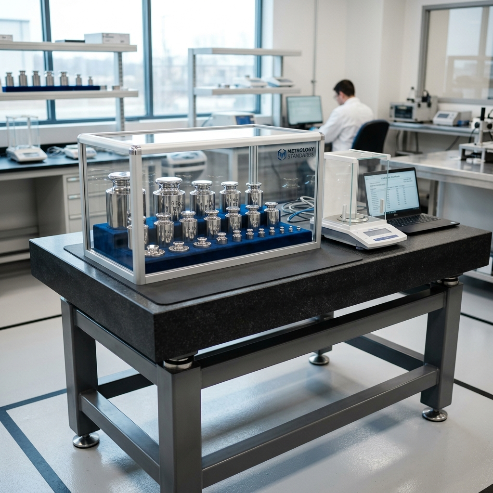
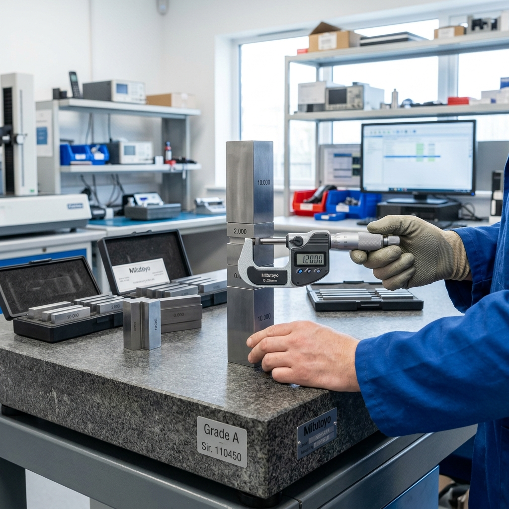
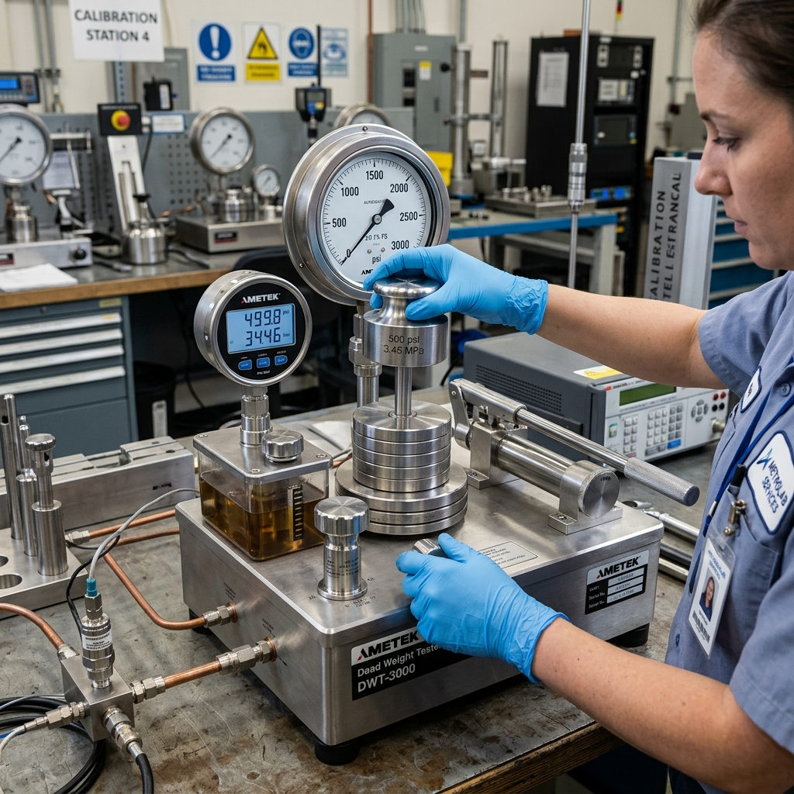
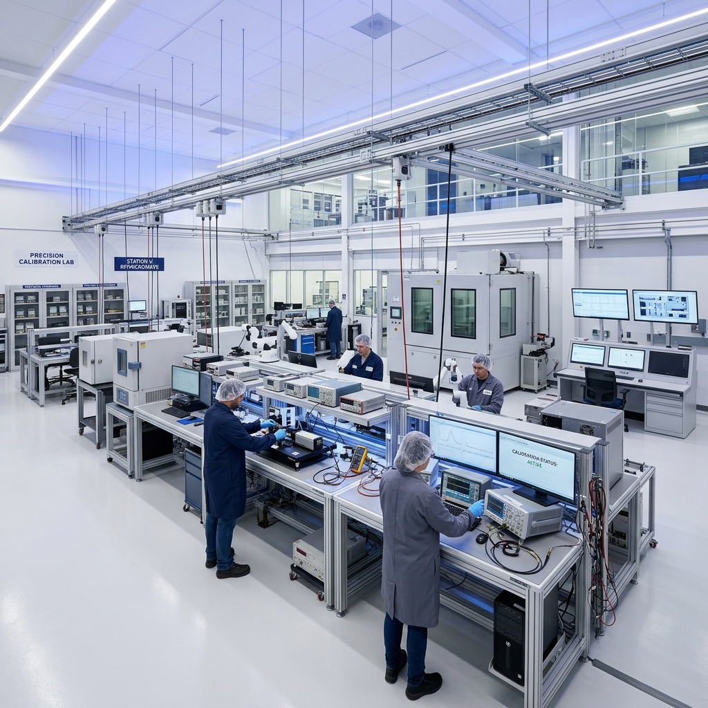

Semua Artikel & Edukasi
Temukan berbagai informasi penting seputar dunia kalibrasi, standar industri, dan tips operasional yang dapat meningkatkan kualitas dan keamanan bisnis Anda.

Mengapa Kalibrasi Rutin Wajib Dilakukan di Industri?
Alat ukur yang tidak dikalibrasi dapat menghasilkan data yang menyesatkan, berdampak pada kualitas produk dan keselamatan kerja.
Baca Selengkapnya
Apa itu ISO/IEC 17025 dan Mengapa Penting bagi Klien?
Sertifikat yang diterbitkan oleh laboratorium terakreditasi ISO 17025 memiliki nilai hukum yang diakui dan dapat diverifikasi secara global.
Baca SelengkapnyaKapan Harus Pilih Kalibrasi In-Lab vs. On-Site?
Beberapa jenis alat tidak bisa dipindahkan. Ketahui kondisi mana yang mengharuskan Anda memilih layanan kalibrasi langsung di lokasi.
Baca Selengkapnya
Pentingnya Kalibrasi Alat Ukur Dimensi pada CNC
Kesalahan mikro pada alat ukur dimensi dapat menyebabkan gagal produk yang merugikan. Pelajari standar toleransi untuk komponen mekanis.
Baca Selengkapnya
Mencegah Kebocoran Pipa dengan Kalibrasi Pressure Gauge
Pressure gauge yang tidak akurat adalah bom waktu di pabrik kimia. Kalibrasi rutin menekan risiko kegagalan instrumen fatal hingga 95%.
Baca Selengkapnya
Cara Mengatur Jadwal Kalibrasi Alat untuk Pabrik Skala Besar
Strategi manajemen kalibrasi agar operasional pabrik tidak terganggu. Buat matriks penjadwalan yang efisien bersama tim QC Anda.
Baca SelengkapnyaPanduan Persiapan Audit ISO 9001 untuk Departemen QC
Jangan sampai gagal audit hanya karena sertifikat kalibrasi kedaluwarsa. Ikuti checklist lengkap ini untuk persiapan audit tahunan.
Baca Selengkapnya
Regulasi Suhu Penyimpanan Makanan: Peran Penting Kalibrasi Termometer
Industri makanan sangat bergantung pada suhu. Suhu yang tidak akurat bisa merusak batch produksi senilai ratusan juta rupiah.
Baca SelengkapnyaTren Digitalisasi Laboratorium Kalibrasi di Era Industri 4.0
Bagaimana sistem LIMS (Laboratory Information Management System) membantu mempercepat proses penerbitan sertifikat dengan lebih akurat.
Baca Selengkapnya